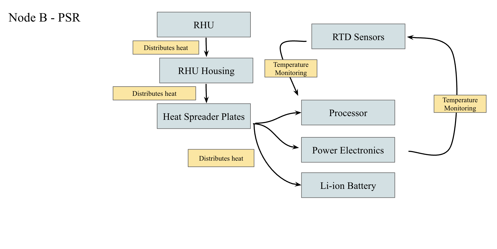

Designing a lunar mission to compare radically different South Pole environments.
LSP-REM is a preliminary mission concept developed by Team Crater Crew through NASA's Mission Concept
Academy. Two autonomous lunar nodes would deploy near one another: Node A at an illuminated highland site
and Node B inside a permanently shadowed region.
Identical instrument suites would measure radiation, dust, illumination, and surface temperature at both
sites. Comparing their data would help separate environmental effects caused by illumination and extreme
temperature, supporting safer future lunar exploration and surface-system design.
02 · Thermal design
Maintaining spacecraft survival across illuminated terrain and a permanently shadowed region.
As the team's Thermal Engineer, I performed thermal calculations and analysis, developed the thermal-control
subsystem architecture, and created heat-flow diagrams showing how each node would retain and distribute heat.
Node A · Illuminated site
Combined passive insulation and heat distribution with a battery-powered survival heater governed by
resistance temperature detector measurements.
Node B · Permanently shadowed region
Used a radioisotope heater unit, multilayer insulation, heat spreaders, and thermal straps to protect
batteries, processors, power electronics, and navigation hardware in extreme cold.
03 · Diagrams
Mapping heat flow and interfaces within the Node B thermal subsystem.
Node B heat-flow model for the permanently shadowed lunar environment.

Connections between heat-generation, distribution, monitoring, and spacecraft subsystems.
04 · Systems engineering
Carrying thermal decisions through risk, interfaces, cost, and mission planning.
Risk + interfaces
Used FMEA and N² analysis to evaluate thermal failure modes and define connections with power,
command-and-data handling, payload, and mechanical subsystems.
Programmatics
Contributed to project management and used NASA budgeting tools to connect component selection and
thermal architecture with mission cost and schedule constraints.
05 · Program
NASA L'SPACE Mission Concept Academy.
The academy provides hands-on mission-development training and guides student teams through the creation
of a preliminary mission concept and design review.